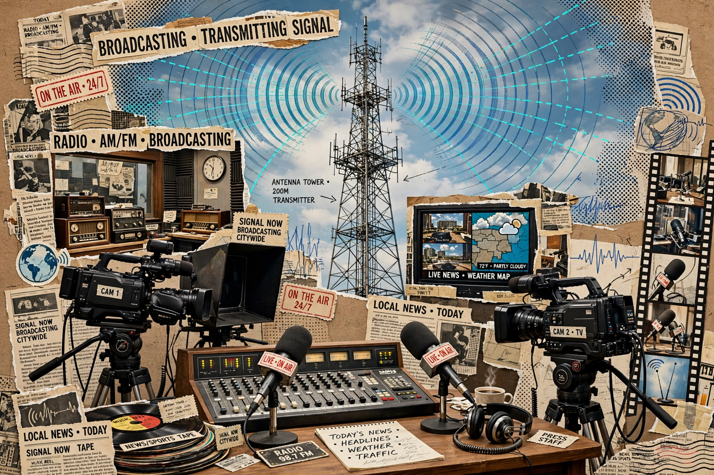

Broadcasting is the distribution of audio or video content to a dispersed audience via any electronic mass communications medium, in a one-to-many model. Originally radio broadcasts, it expanded to television, cable, satellite, and internet streaming.

Early radio broadcasting began in 1920s (KDKA Pittsburgh, BBC 1922). Television broadcasting followed 1930s-50s, colour, then digital terrestrial, satellite, and webcasting.
Terrestrial, satellite, cable, IPTV. Spectrum licensed by regulators such as FCC and Ofcom; public service, commercial, and community models. See Radio, Television, Mass media.